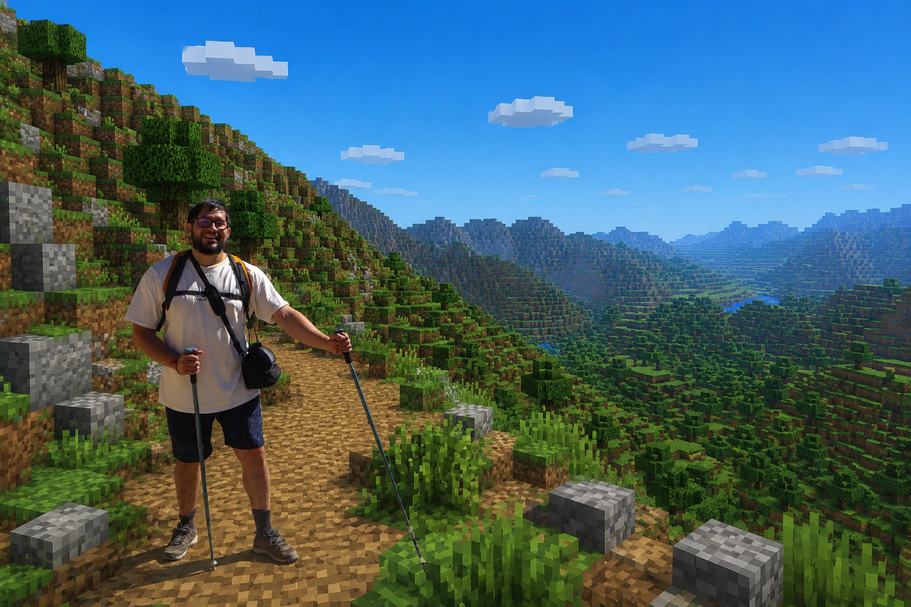

Dev Portfolio
Diego Córdova
Acá voy dejando proyectos personales, experimentos y cosas que armo fuera del trabajo — sin el filtro corporativo. Para lo profesional, está cordovacodes.com.
Novedades
Todavía no hay nada publicado acá — vuelve pronto.